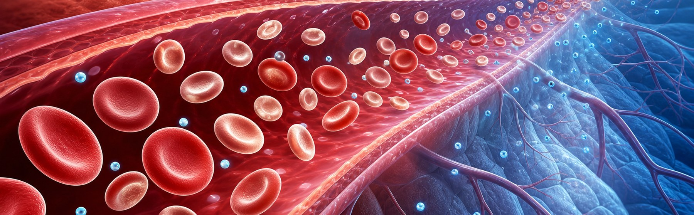
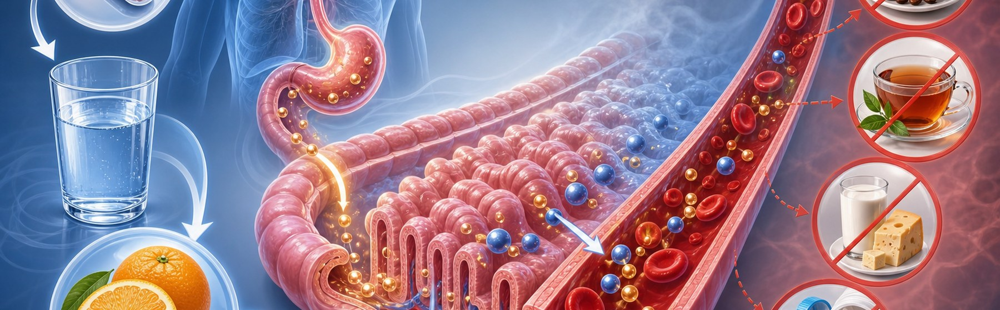

철결핍성 빈혈,
원인을 찾고 채워주면 회복됩니다
Iron Deficiency Anemia (IDA) — 원인·진단·철분제·식이·재발 방지
가장 흔한 빈혈 — 한국 가임기 여성 5명 중 1명
전 세계 빈혈의 약 50%가 철결핍성. 남성·폐경 후 여성에서는 출혈 원인을 반드시 찾아야 합니다
철결핍성 빈혈 (IDA) 이란
체내 저장철 고갈 → 헤모글로빈 합성 부족 → 적혈구 크기·산소운반능력 감소
철은 헤모글로빈의 중심 — 부족하면 작고 창백한 적혈구가 만들어져 산소 운반이 떨어집니다.
철 손실(출혈·생리)이나 섭취/흡수 저하가 지속되면 ① 저장철(페리틴)이 먼저 떨어지고 → ② 운반철(혈청철·TSAT)이 줄고 → ③ 적혈구 크기(MCV)가 작아지고 → ④ 마침내 헤모글로빈(Hb)이 떨어집니다. 페리틴이 가장 민감한 지표라 Hb가 정상이어도 페리틴 ↓ 만으로 진단·치료할 수 있습니다.

왜 철이 부족해지나 — 6가지 흔한 원인
"손실 > 흡수" 또는 "수요 > 공급" — 진단 후 반드시 원인을 평가합니다
증상 — 천천히 진행해서 본인은 잘 모릅니다
서서히 빈혈이 진행하면 몸이 적응해 증상이 약합니다. 적은 활동에도 평소보다 힘들면 의심하세요
진단 — 4가지 수치로 확정
Hb 단독으로는 진단 어려움. 페리틴·TSAT을 반드시 함께 봅니다
1차 치료 — 경구 철분제 + 흡수 최적화
대부분의 환자는 경구 철분제로 회복. 격일 복용이 매일 복용보다 흡수율이 높을 수 있습니다
철분제는 공복 + 비타민 C 동시 복용이 흡수를 최대로 끌어올립니다. 차·우유·칼슘제와는 시간 간격을 두세요.
성인 권장 용량은 원소철 100~200mg/일. 최근 연구는 격일 복용이 일일 복용보다 헵시딘 차단을 피해 흡수율이 더 높을 수 있음을 시사합니다. 위장 부작용(메스꺼움·변비·검은 변)이 흔해 식사 직후나 저용량부터 시작합니다. Hb 정상화에 약 2개월, 페리틴 회복에 추가 3~6개월 필요. 최소 6개월 이상 복용해 저장철까지 채워야 재발을 막습니다.

경구로 부족할 때 — 정맥 철분제 + 원인 평가
위장 부작용·흡수 장애·심한 빈혈·임신 후기에서 정맥 철분제가 빠른 회복을 돕습니다
철분 흡수를 돕는 식사 vs 막는 식사
철분제와 함께 복용 시 흡수를 ↑↑하는 식품과, ↓↓ 떨어뜨리는 식품을 구분해 시간 배치합니다
- 비타민 C 풍부 식품 — 오렌지·키위·딸기·피망·브로콜리
- 붉은 고기·간·내장 — 헴철, 흡수율 25%
- 달걀·생선·가금류 — 단백질 + 철 함유
- 철분 강화 시리얼 — 아침 식사 보조
- 녹황색 채소 — 시금치·근대 (Vit C와 함께)
- 콩·렌틸·두부 — 비헴철, 다양한 식단
- 차·커피 — 탄닌이 흡수 50~80% ↓
- 우유·요거트·치즈 — 칼슘이 경쟁 흡수
- 칼슘제·제산제·위장약 — 위 산도 ↓
- 통곡물·견과 다량 — 피틴산 흡수 저해
- 적포도주 과량 — 폴리페놀
- 철분제 + 갑상선약 동시 복용 — 시간 분리
즉시 평가가 필요한 신호 — 단순 빈혈로 보지 말 것
아래 상황은 출혈원·악성 평가가 필요하며, 철분제만 보충하면 안 됩니다
환자 실천 7가지 — 복용·식이·추적
제대로 복용하고 추적하면 대부분 회복하며 재발도 막을 수 있습니다
원인을 찾고 6개월 이상 채우면 완치됩니다
빈혈은 결과이지 진단이 아닙니다 — 원인을 함께 평가하면 재발 없이 회복합니다